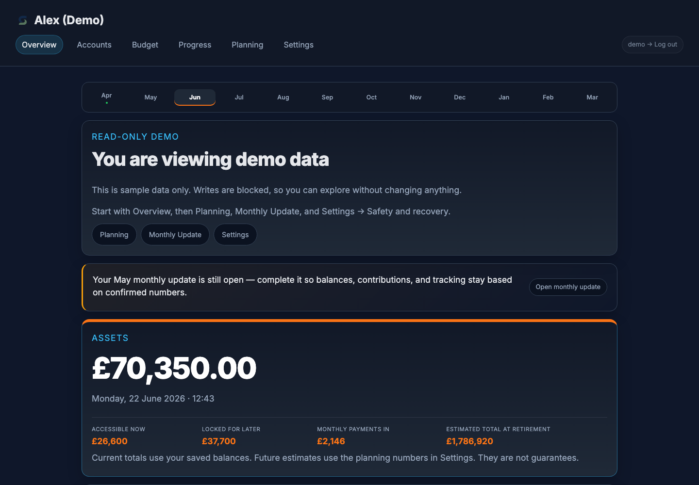
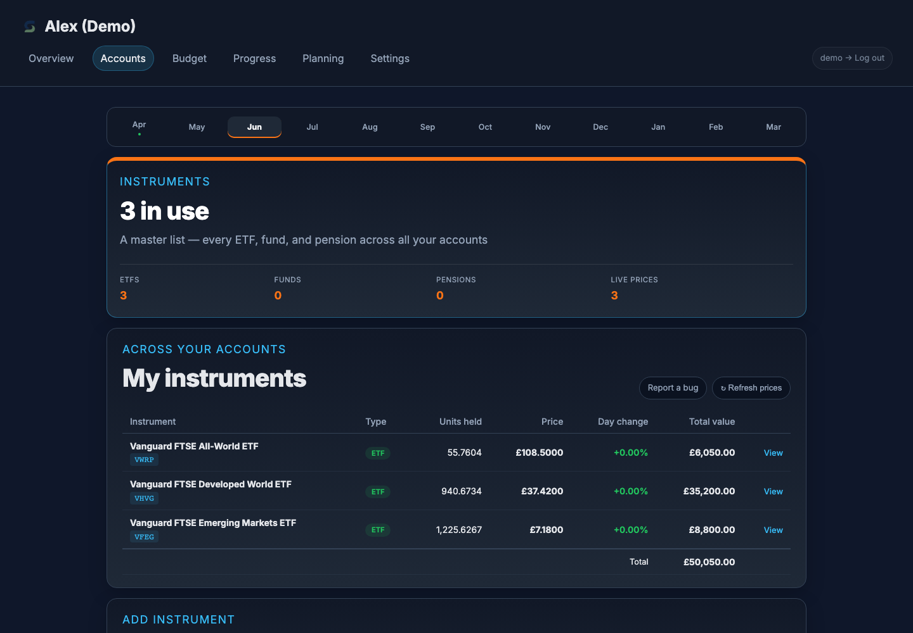
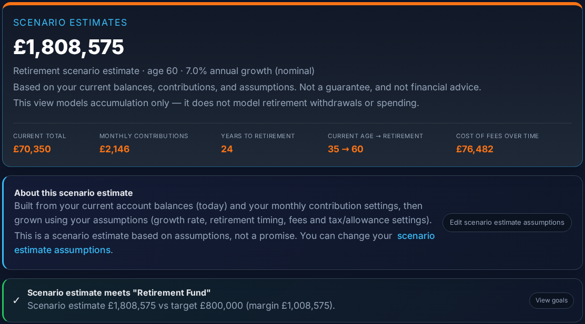
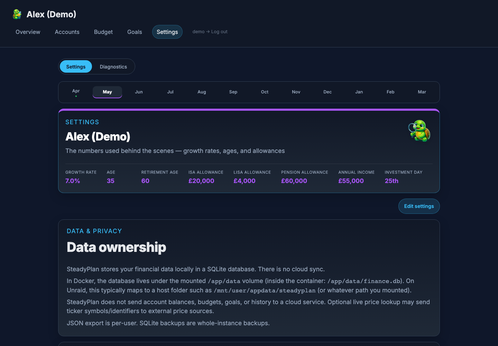

Tour
A calm tour of SteadyPlan
These screenshots use demo data. SteadyPlan runs on your own server/NAS/desktop, and you use it in a browser (desktop, tablet, or phone). It’s a planning and visibility tool — not a bank, broker, or adviser.
Overview
A single place to see the current picture and the next actions that keep the numbers honest: monthly contributions, snapshots, and what’s due.

Holdings
Track accounts and holdings without needing bank/broker linking. If you enable optional price lookups, tickers may be sent to external price sources — otherwise you can keep it fully manual.

Projections
Scenario estimates for retirement planning. The outputs are driven by your current balances, contribution settings, and assumptions you control in Settings.

Settings / data ownership
Clear boundaries: local database, backups, exports, and what leaves your machine. This is where you edit the assumptions that feed projections.
